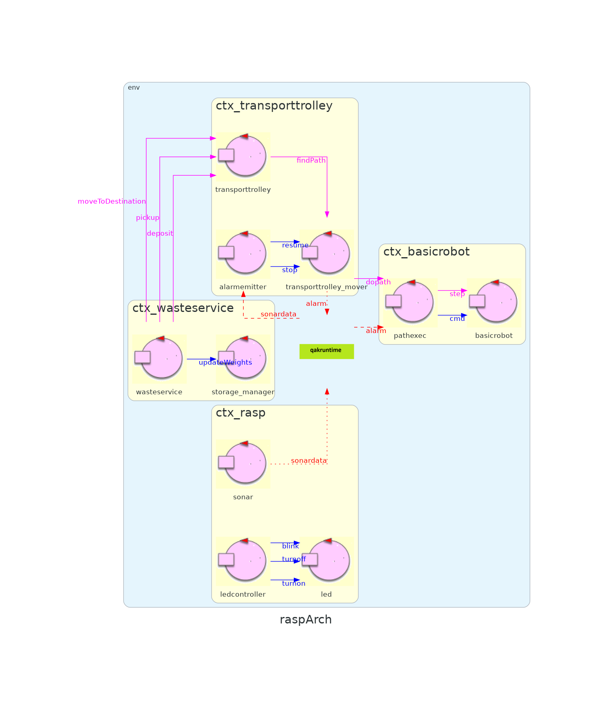
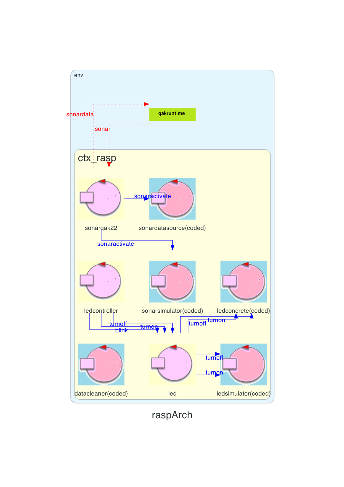
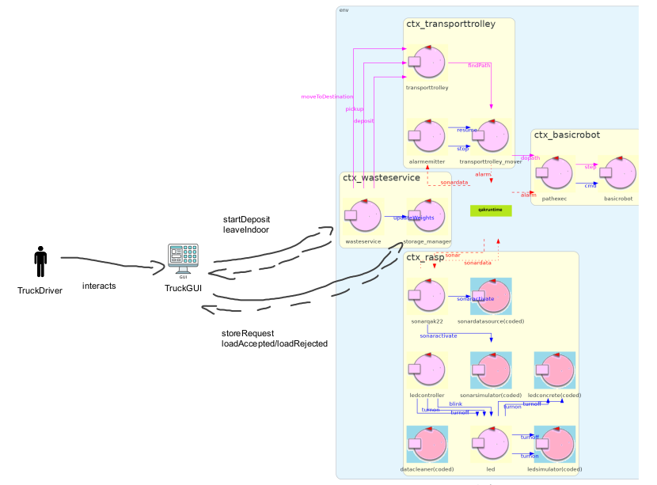

Introduction
Tema finale dell'esame di ingegneria dei sistemi software: WasteService
Requirements
Testo requisiti fornito dal committenteRequirement analysis
Requisiti funzionali¶
Requisiti riguardanti LED e SONAR-
Led Off: nel caso in cui il trolley si trovi nella posizione HOME.
-
Led Blinks: mentre il trolley si sta muovendo.
-
Led On: quando il trolley è stoppato.
-
Sonar: nel caso in cui il sonar misuri una distanza minore di DLIMIT, il trolley deve essere stoppato. Verrà riattivato quando il sonar rileverà una distanza maggiore di DLIMIT
Led
Per quanto riguarda la gestione del LED, il committente ha fornito diversi materiali: led25GpioTurnOn.sh che permette di accendere un led e led25GpioTurnOff.sh che permette di spegnere un led.Inoltre, l'azienda dispone di un progetto che permette di gestire un Led in modo semplice, attraverso Java, it.unibo.radarSystem22.domain, che si consiglia di utilizzare.
Dai requisiti è possibile notare tre diversi comportamente che il led deve esibire:
- TurnOn: accensione del Led. il led deve essere acceso quando il tranport trolley è fermo, in seguito ad un interrupt dovuto al sonar.
- TurnOff: spegnimento del Led. Il led deve essere spento quando il trolley si trova nella posizione HOME.
- Blink: spegnimento ed accensione in modo alterno. Il led deve lampeggiare quando il trolley si sta muovendo.
Il Led deve essere realizzato come attore per poter interagire con gli altri componenti del sistema.
Modello led analisi requisiti
Sonar
Il Sonar è un dispositivo di input che emette la distanza dall'ostacolo più vicino ad esso.Per dare conoscenza agli altri componenti del sistema della distanza rilevata si possono utilizzare due strategie:
- Polling: Il componente interessato ai dati prodotti dal dispositivo di input invoca un metodo del sonar per ricevere il primo dato disponibile.
- Observer: il componente consumatore dei dati si relaziona con il dispositivo di input secondo il pattern observer, lasciando il sonar come un generatore di dati che non si interessa dei destinatari delle proprie informazioni.
Dai requisiti sul sonar si sono notati due principali comportamenti relativi al sonar:
- Stop: nel caso in cui la distanza sia minore di DLIMIT, il trolley deve fermarsi.
- Resume: nel caso in cui la distanza sia maggiore di DLIMIT, il trolley deve ripartire con le sue funzioni.
Modello sonar analisi requisiti
Problemi da analizzare
Tipo di interazione con il Led
Quale tipo di comunicazione per fare eseguire al led le varie operazioni?Stato del trolley
Come fa il led a sapere lo stato del trolley?Interazione con il Led
Quale componente deve interagire con il Led?Tipo di interazione per i messaggi del Sonar
Che tipo di comunicazione bisogna usare per inviare i messaggi del sonar (resume/stop)?Modo in cui il Sonar invia i dati registrati
Che tipo di comunicazione si vuole utilizzare per comunicare i dati che il sonar registra?Analisi distanze
Quale componente analizza le distanze rilevate dal sonar?Problem analysis
Tipo di Interazione con il Led
Per segnalare al led di doversi accendere/spegnere/lampeggiare esistono diverse soluzioni.Dispatch
Potrebbe anche essere realizzato come un solo messaggio e si specifica nell'argomento quale azione eseguire.Dispatch blink : blink(_)Dispatch turnon : turnon(_)Dispatch turnoff : turnoff(_)
Evento
Si potrebbe utilizzare un evento per poter specificare al led di cambiare il prorio stato. Il principale vantaggio di una soluzione ad eventi è la grande estendibilità che garantisce, dato che nel momento in cui si vanno ad aggiungere nuovi led, basta che si mettano in ascolto dell'evento.Event ledStatus : ledStatus(Status)
Lo svantaggio principale dell'evento è la sicurezza nella consegna del messaggio. Nel caso si perda un segnale di blink non sarebbe un problema, ma diventerebbe un problema nel momento in cui si perda un segnale di on o off.
Stato del trolley
Nello sprint1 non si aveva necessità di conoscere lo stato del trolley (active, stopped, idle) e quindi non si ha ancora un componente che lo emetta.Evento
Per poter comunicare lo stato del trolley si pensa di poter utilizzare una soluzione ad eventi, in modo che tale evento possa successivamente essere anche ricevuto dalla GUI.CoAP observable
Essendo il trolley sviluppato come Attore Qak, esso risulta essere una risorsa CoAP observable ed è, quindi, possibile sfruttare questa caratteristica andando a creare un observer che analizzi i cambiamenti di stato del trolley.Si può anche discutere su quale componente debba emettere l'informazione. Da un lato potrebbe essere delegata al WasteService, dall'altro potrebbe essere il transportTrolley ad emettere l'informazione.
Essendo lo stato del trolley strettamente legato al trolley stesso sembrerebbe essere una soluzione più intuitiva e ragionevole.
Interazione con il led
WasteService
In una prima soluzione potrebbe essere il wasteService che si occupa di segnalare al led se spegnersi o accendersi o lampeggiare.Anche se questa soluzione permetterebbe di delegare la maggior parte della logica di business al WasteService, comporta un costo di overhead nel numero di messaggi da scambiare, soppratutto nel caso in cui si decida di lasciare al transportTrolley la responsabilità di comunicare lo stato nella quale esso si trovi.
Transport Trolley
Potrebbe essere il transport Trolley a comunicare direttamente al led quale azione eseguire.Si sconsiglia fortemente questa soluzione, dato che porterebbe ad aggiungere al trolley grosse responsabilità per quanto riguarda la logica di business.
Gestore del led
Si potrebbe realizzare un ulteriore componente che osservi lo stato del trolley (nel caso in cui si scelga la soluzione basata su CoAP oppure che esamini gli eventi nel caso della prima soluzione) e segnali al led di eseguire le varie operazioni.Tipo di interazione con il sonar
Il sonar ha la necessità di comunicare con il resto del sistema per bloccare/riprendere il percorso del trolley. Data l'importanza di queste operazioni si sconsiglia una soluzione basata ad eventi.Dispatch
Dispatch stop : stop(_)Dispatch resume : resume(_)
Request/Respone
Questa comunicazione potrebbe anche essere realizzata tramite request/response. In questo caso, la response potrebbe essere utilizzata come segnale di ACK per essere sicuri che l'operazione sia stata ricevuta correttamente.Considerando che questi tipi di messaggi dovrebbero essere piuttosto rari, l'overhead generato dalla risposta risulta essere completamente trascurabile.
In questo modo si ha la possiblità di realizzare a livello applicativo un comportamento in caso il messaggio non venga consegnato.
Request stop : stop(_)Reply stopAck : stopAck(_)
Modo in cui il Sonar invia i dati registrati
Eventi
Il Sonar potrebbe emettere ad ogni aggiornamento sulla distanza un evento contenente la nuova distanza, ed i componenti interessati del sistema potranno ricevere tale informazione.Event distance : distance(DIST)
Considerando che potrebbero esserci diversi componenti interessati a questa informazione, anche per possibili evoluzioni del progetto, potrebbe essere una buona soluzione.
CoAP
Essendo un attore QaK è possibile analizzare le sue informazioni attraverso CoAP.Il principale svantaggio di questa soluzione è il fatto che il componente che interagisce con il sonar deve effettivamente conoscerlo, a differenza della soluzione tramite eventi.
Note
Come citato in precedenza, nel caso in cui ci possano essere diversi componenti interessati alla distanza emessa dal sonar, la soluzione ad eventi risulta preferibile.Nel caso in cui si usasse CoAP ci sarebbe un'interazione request/response ogni volta che un componente sia interessato alla distanza e questo potrebbe sovraccaricare il sistema.
Quindi, anche per ragioni di scalabilità, si consiglia la soluzione ad eventi.
Analisi distanze
Waste Service
Il waste Service potrebbe analizzare le distanze rilevate dal sonar per poi mandare i comandi direttamente al Trolley.In questo modo si vanno ad aggiungere ulteriori responsabilità al wasteService.
Trolley
Il trolley potrebbe analizzare le distanze e quando trova una distanza minore di DLIMIT, si potrebbe fermare.A livello implementativo potrebbe risultare la soluzione più semplice, ma aumenta l'accoppiamento fra i componenti e si perde la possiblità di realizzare il trolley come attuatore.
Componente aggiuntivo
Un ulteriore componente potrebbe essere inserito nel sistema per poter analizzare le distanze, e nel caso sia opportuno inviare al trolley il segnale per poter stoppare/riprendere le sue azioni.Questa soluzioni risulta la più flessibile.
Chi riceve il comando per bloccare/riprendere l'esecuzione del trolley
Il segnale che si occupa di bloccare/riprendere l'esecuzione del trolley potrebbe essere gestito da diversi componenti:Transport Trolley
Potrebbe essere il componente di più alto livello a gestire questi messaggi, per poi comunicarli al livello sottostante (Mover).Con questa soluzione possiamo fornire all'handler un'informaizone sul proprio stato, che potrebbe esserre utilizzata per comunicare con il resto del sistema.
Transport Trolley mover
Potrebbe essere il mover a gestire questi segnali, essendo i comandi di blocco/ripresa comandi relativi all'effettivo movimento del robot (e quindi di basso livello).Tutto avverebbe in maniera completamente trasparente rispetto ai componenti di alto livello. Essendo che, al momento, il componente Handler del trolley si occupa solamente delle azioni di alto livello di quest'ultimo, questa soluzioni risulta ragionevole.
BasicRobot
Si potrebbe apportare una modifica al basicRobot per poter comunicare direttamente con esso.Essendo che si è deciso di utilizzare il basicRobot per facilitare lo sviluppo del sistema (essendo esso un componente già sviluppato dalla software house) si sconsiglia questa soluzione.
Soluzione Proposta
Tabella nella quale vengono elencati i messaggi aggiunti in questa fase:| Messaggio | Tipo | Descrizione |
|---|---|---|
| blink | Dispatch | Messaggio inviato dal LedController per segnalare al led di eseguire blink |
| turnOn | Dispatch | Messaggio inviato dal LedController per segnalare al led di accendersi |
| turnOff | Dispatch | Messaggio inviato dal LedController per segnalare al led di spegnersi |
| sonardata | Event | Evento inviato dal sonar per segnalare la distanza rilevata |
| stop | Dispatch | Messaggio inviato dall'alarm emitter al transporttrolley_mover nel caso il sonar rilevi una distanza minore di DLIMIT |
| resume | Dispatch | Messaggio inviato dall'alarm emitter al transporttrolley_mover nel caso il sonar rilevi una distanza maggiore di DLIMIT e il trolley sia in stato di stop |
Nella soluzione proposta si è cercato di mantenere separato i componenti sul raspberry dal resto del sistema.
Per quanto riguarda i cambiamenti ai componenti già realizzata si ha:
- WasteService: aggiorna attraverso CoAP la posizione del trolley all'interno della stanza.
- TransportTrolley: aggiorna attraverso CoAP lo stato nella quale si trova, che viene successivamente utilizzato dal LedController per comandare il led.
Modello analisi del Problema Sprint2
Modello analisi del problema raspTransportTrolley
WasteService
Architettura logica
Test plans
Di seguito vengono riportati i test per assicurarsi il corretto funzionamento dei nuovi componenti
del sistema.
Per effettuare il testing del sistema, avviare attraverso docker l'immagine dello sprint1 del sistema.
Test Led
Test led
Test Sonar
Test sonar
Per effettuare il testing del sistema, avviare attraverso docker l'immagine dello sprint1 del sistema.
Test Led
Test led
-
TestLed: il test va a verificare il corretto comportamento del led, in base allo stato
in cui si trova il trolley.
Viene inviata una richiesta di un truck e si controlla che il led si trovi nello stato giusto in base allo posizione e allo stato del trolley. -
TestLedStop: Si invia una richiesta da parte di deposito e dopo un tempo random si invia un messaggio di stop e si verifica che il trolley sia
in stato di stop e che il led sia acceso.
Dopo un tempo T viene inviato il messaggio di resume e si controlla che il led e il trolley abbiano cambiato il loro stato.
Test Sonar
Test sonar
- TestSonar: il test va a verificare che nel caso in cui il sonar osservi una distanza minore di DLIMIT, il trolley vada in stato di STOP.
Project
Sonar
Il primo compito della progettazione sarà quello di realizzare in modo più approfondito il sonar.Considerando che la software house possiede già un progetto per quanto riguarda il sonar: unibo.sonarqak22, utilizzerò tale progetto come base di partenza.
Il progetto sonarqak22 permette di creare una pipe di attori come quelli mostrata di seguito:

Il primo attore della pipe risulta essere un generatore di dati (che può essere sia un sonar virtuale, che genera dati random, sia un vero sonar che invia i dati che legge), successivamente si ha un dataCleaner che permette di filtrare i dati non significativi; ed infine, si ha il nostro attore sonarqak22 che permette di inviare tramite evento i dati filtrati di datacleaner agli altri componenti del sistema che risultano essere interessati.
I generatori di dati, il primo attore della pipe, sono realizzati come attori Kotlin (CodedQActor) e il loro progetto è: sonarHCSR04Support2021.kt e sonarSimulator.kt
Led
Per quanto riguarda il led si è voluto sfruttare un approccio simile a quello del sonarqak22, nella quale si crea una pipe di attori.In questo caso, non essendo il led un generatore di dati, non si ha la necessità del datacleaner come in precedenza, ma la realizzazione del progetto come pipe permette una grande flessibilità, in particolare nel caso si vogliano aggiungere nuovi comportamenti intermedi, come potrebbe essere un logger.
Nel caso attuale verranno realizzati due attori: ledSimulator e ledConcrete. Il led di alto livello avrà la responsabilità di inviare i vari comandi all'apposito attore (nel caso simulation=true verrà inviato a simulator, concrete nel caso opposto).
Di seguito viene riportato il codice dei due attori: ledSimulator e ledConcrete

Architettura finale
Modello
RaspTransportTrolley
WasteService
Architettura finale
Testing
I test sono rimasti gli stessi mostrati in test plans.
Deployment
Per quanto riguarda il deployment di questo sprint si sono creati nuovi file yaml per la distribuzione attraverso dokcer-compose.
In questo caso si sono creati due file diversi:
Vengono mostrate i servizi e le porte utilizzate fino a questo punto dai componenti del sistema.
In questo caso si sono creati due file diversi:
- wasteservice_Sprint2_sameDevice.yaml: contiene tutti i componenti sulla stessa macchina.
- wasteservice_Sprint2_rasp.yaml: permette di lanciare la parte del sonar e led sul raspberry.
- wasteservice_Sprint2_Pc.yaml: permette di lanciare la parte sviluppata nello sprint1 (con le modifiche effettuate in questo sprint) separatamente da led e sonar, in modo che possano essere lanciati in modo distribuito.
Vengono mostrate i servizi e le porte utilizzate fino a questo punto dai componenti del sistema.
| Service | Port |
|---|---|
| WasteService | 8049 |
| TransportTrolley | 8051 |
| TruckGUI | 8080 |
| VirtualRobot | 8090 |
| BasicRobot | 8020 |
| Rasp | 8056 |
By Thomas Ambrogini email: thomas.ambrogini@studio.unibo.it